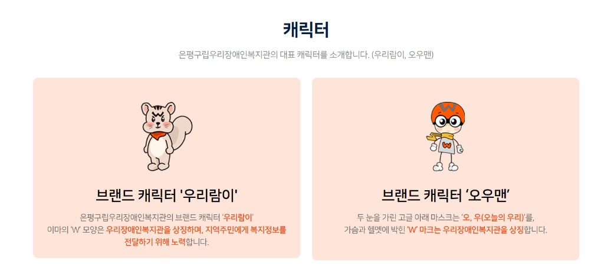

1. 프로젝트 개요
| 항목 | 내용 |
|---|---|
| 단체명 | 우리챔버오케스트라 (Woori Chamber Orchestra) |
| 소속 | 은평구립우리장애인복지관 프로그램 |
| 사이트 형태 | 독립 홈페이지 (복지관 사이트에서 링크 연결) |
| 1차 목적 | 소개 — 오케스트라란 무엇인지, 누가 연주하는지 |
| 운영 | 오케스트라 운영담당자 |
| 1차 메뉴 | 홈 · 소개 · 단원 · 문의 (공연·소식은 2차) |
2. 디자인 원칙
지켜야 할 것
복지관 CI 색상·톤 유지 (오렌지 + 그레이 + 피치)
슬로건 「꿈을 향한 행복한 동행」과 어울리는 따뜻하지만 가볍지 않은 톤
복지관 로고·소속 표기 필수
접근성 고려 (가독성, 대비, 키보드 탐색)
오케스트라만 더할 것
공연 사진·히어로의 무대감
단원을 연주자로 보여주는 카드
짧고 담담한 카피 (동정 유발 표현 지양)
나무말미식 출판/베이지 톤 사용 안 함
핵심 메시지: 복지관 프로그램이지만, 동정의 대상이 아니라 무대에 서는 연주자들의 오케스트라입니다.
3. 복지관 CI (공식 색상)
은평구립우리장애인복지관 CI 페이지 및 제공 CI 파일 기준

CI 가이드 — 심볼: 오렌지 두 점 + 그레이 곡선 (「오」「우」, 함께 나아감)

캐릭터 (우리람이·오우맨) — 본문 과다 사용 지양, 푸터 등 선택적
오렌지 (포인트)
#E85A24
CMYK 0, 77, 100, 0
다크 그레이 (텍스트)
#262626
CMYK 0, 0, 0, 85
피치 (섹션 배경)
#FBE8E6
화이트 (기본 배경)
#FFFFFF
4. 색감 방향 3안 비교
3안 모두 CI 오렌지·그레이를 공통으로 사용합니다. 차이는 배경 밝기와 히어로(상단 영역) 무대감입니다.
WCO소개·단원·문의
은평구립우리장애인복지관 소속
음악으로 세상과 만나는
우리챔버오케스트라
문화연계형 복지일자리 프로그램
오케스트라 소개최근 공연
A. CI 동행 라이트
복지관 사이트와 가장 자연스럽게 이어짐. 피치 배경 + 오렌지 버튼.
복지관 연속성: 매우 높음 | 오케스트라 품위: 보통
WCO소개·단원·문의
은평구립우리장애인복지관 소속
별이 된 꿈,
세상을 물들이다
공연 사진 + 오렌지 포인트
오케스트라 소개최근 공연
B. 무대와 동행 추천
히어로만 다크 그레이, 본문은 CI 톤. 공연 사진 투입 + 소개 목적에 가장 유연.
복지관 연속성: 높음 | 오케스트라 품위: 높음
WCO소개·단원·문의
은평구립우리장애인복지관 소속
음악으로 전하는 이야기
어두운 무대 + 오렌지 포인트
오케스트라 소개최근 공연
C. 무대 다크
오케스트라 품위 최대. 복지관 연속성은 상단 오렌지 라인·로고로 보완.
복지관 연속성: 보통 | 오케스트라 품위: 매우 높음
1차 추천: B안 (무대와 동행) — 복지관 CI 톤을 유지하면서, 공연 사진이 준비되면 히어로에 자연스럽게 넣을 수 있습니다.
5. 카피 톤 가이드
| 쓰지 않을 표현 | 쓸 표현 |
|---|---|
| 불우한 장애인을 돕습니다 | 음악으로 지역사회와 소통합니다 |
| 특별한 아이들의 꿈 | 발달장애 예술가로 성장하는 연주자들 |
| 따뜻한 마음을 나눠주세요 | 우리의 무대를 함께 응원해 주세요 |
미션 문장 초안: 「음악으로 세상과 만나는, 우리챔버오케스트라」
6. 사진·로고 (현재 상태)
| 자료 | 상태 | 비고 |
|---|---|---|
| 복지관 CI | 확보 | woori_CI.ai, 색상 코드 확정 |
| 공연 사진 | 추후 확보 | 보도자료·SNS·단체 앨범에서 수집 예정 |
| 오케스트라 전용 로고 | 미정 | 1차는 복지관 로고 + 프로그램명 조합 |
| 단원 사진 | 추후 확보 | 초상권 동의 후 게시 |
사진 없이도 1차 론칭 가능: 단색 히어로 + 소개 문장 + 복지관 소속 띠
7. 의견 요청
아래 항목에 대한 의견을 주시면 디자인을 확정하고 개발에 들어갑니다.
| # | 질문 | 선택지 |
|---|---|---|
| 1 | 색감 방향 | A / B (추천) / C |
| 2 | 복지관 로고 노출 위치 | 상단 띠 / 푸터 / 둘 다 |
| 3 | 히어로 문장 | 초안 수정 또는 새 문장 제안 |
| 4 | 공유 가능한 공연 사진 | 있음 / 추후 제공 |